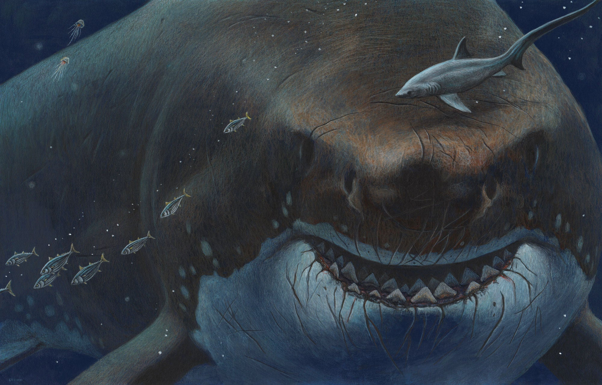
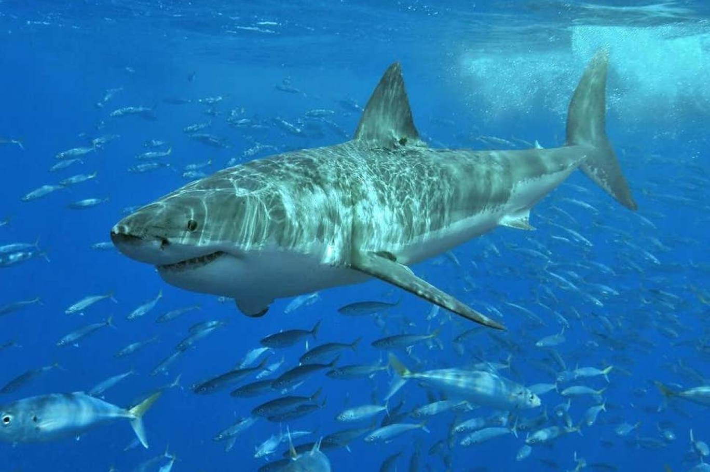

Büyük Beyaz Köpek Balığının Temel Özellikleri
Büyük Beyaz Köpek Balığı
Yaygın Adı: Büyük Beyaz Köpek Balığı (Beyaz sivri burun, mavi sivri burun, adam yiyen, Tommy, ölü köpek balığı, kuyruk, beyaz ölüm)
Boyutları: Ortalama boyları 5,5-6 m arasındadır. Ancak ele geçirilen örneklerden 11 m maksimum uzunluğunda olanları kayda geçmiştir.
Fiziksel Özellikleri: Torpido şeklinde gövde, konik sivri burun, üst ve alt çene dişleri çok benzer ve kenarları testere tırtıklı, üst dişler biraz daha geniş, gövdenin üst kısmı griden kahverengi tonlarına kadar değişir. Düzgün olmayan bir çizgi, gövdenin üst yarısını, beyaz olan alt yarısından ayırır.
Yaşam Çizgisi: Yavrulayan türlerdir. Bir yıla yakın hamilelikten sonra 5-14 tane yavrularlar. Olgun dişlerde göğüs yüzgeçlerinde belirgin görülen ısırık izleri vardır. Bu durum erkek beyaz köpek balıklarının, çiftleşme esnasında dişileri ısırdıklarını gösterir.
Beslenme Tarzı: Çoğunlukla kemikli balıklar, ayrıca omurgalı balıklar, deniz kaplumbağaları, deniz kuşları, deniz memelileri, yunuslar, foklar ve deniz aslanlarıyla beslenirler.
Yeryüzünde Dağılımı: Çoğunlukla sıcak iklimler, yarı tropik sular ve ayrıca daha sıcak bölgelerde dağılım gösterirler.
Popülasyon: 10.000 kadar oldukları sanılmakta fakat gerçek rakam bilinmemektedir.
Türün Durumu: IUCN tehlikelere açıktırlar. CITES tarafından listeye alınmamış devasa büyük beyaz köpek balığı mükemmel bir av makinesidir. O ayrıca pek çok insanın en korkulu rüyasıdır. Bunun yanında tüm inanılmaz ününe rağmen, bu köpek balığının bizden korkmak için bizim ondan korktuğumuzdan çok daha fazla sebebi vardır. Büyük beyaz, en üstün bir avcıdır. Geniş bir çevrede ve çeşitli derinliklerde sıklıkla avlanır. Baskınlık ve yırtıcılık bakımından büyük beyaz, sadece orka, yani açgözlü deniz memelisi olan katil balinalarla yarışabilir.

Büyük Beyaz Köpek Balığı
Uzun Mesafe Avcısı: Büyük beyaz köpek balığı yaşamına çok iyi adapte olmuştur. Köpek balığının aerodinamik, torpido şekilli gövdesi ve dev dişlerden oluşan çeneleri vardır. Dişleri düştüğü zaman yerine yenisini koyan bir taşıyıcı bant sistemi görevini yapar. Üstelik algı pilleri, insanın kavrama kapasitesinin üzerinde bir mükemmellikte olup avını 1,6 km uzaktan fark etmesine olanak sağlar.
Büyük beyaz köpek balığı, fok veya denizaslanı gibi avlarını kendisini fark ettirmeden algılar ve hızlıca yanlarına gelir. Av artık saldırıdan kaçmak için çok geç kalmıştır. Köpek balığı saldırdığı zaman ilk ısırık bir saniyeden az sürer, fakat bu kısacık zamanda aşağıdaki hareketler gerçekleşir: Burun kalkar. Alt çene düşer. Üst çene öne çıkar. Üst çene dişleri görünür. Alt çene öne çıkar. Alt çene yukarı çıkar. Alt çene dişleri ava saplanır. Üst çene dişlemek üzere kapanır. Avlanma tekniğini; uzak mesafeyi araştırmak suretiyle algıladığı avın üzerine son hızla yüzüp, yıldırım gibi atılmak oluşturur ve bu teknikle denizaslanlarını ve fokları avlamakta aşırı derecede başarılıdırlar.
Bu saldırıların yüzde 45’inin başarılı olduğu tahmin edilir ancak daha deneyimli olanlarında bu yüzde 80’lere kadar çıkar. Büyük beyazların uyguladığı bir başka teknik de havaya hoplamalıdır. Bu metot da; köpek balığı kafasını suyun yüzeyine çıkarır ve etraftaki avları araştırır, bunlar genellikle fok sürüleri olur. Fokun üstüne atlarken balık sudan havaya sıçrar, bundan dolayı büyük beyazlar havaya hoplamalarıyla da tanınır.
Çok Çeşitli Damak Zevki: Büyük beyazların menüsünde denizaslanları ve foklar gibi yüzgeç ayaklılar bulunsa da bunları havaların soğuduğu dönemlere rezerv olarak bırakmayı tercih ederler. Çünkü bu zamanlarda köpekbalığının en çok tercih ettiği büyük balıklar, sıcak denizlere göç etmiş olur.
Sezonuna bakmaksızın büyük beyaz köpekbalığı, çok çeşitli av hayvanları ve leşlerle beslenir. Örneğin Akdeniz’de kılıçbalıklarının(xiphiasgladius) menüsünde yer asıldığı bildirilmiştir. Oldukça ağır hareket eden büyük beyaz köpek balığının kılıç balığı gibi çok hızlı yüzen bir avcıyı, nasıl avlayabildiği tam olarak anlaşılamamıştır.
Balinalar ve yunuslar ayrıca büyük beyazın menüsünde yer alır. Buna yavaş yüzen türlerden büyük balinalar (canlısı veya leşi) kadar hızlı yüzen yunuslar ve domuz balıkları da dâhildir. Çok geniş bir yelpazede yer alan kemikli ve kıkırdaklı balıklar (tırpanlar, vatozlar ve diğer köpekbalıkları), bunun yanında kaplumbağalar, büyük kalamarlar, deniz kuşları ve tüm diğer deniz canlıları büyük beyaz köpek balığının besin grubunu oluşturur.
Büyük Beyaz Köpek Balığı
Tehditler: İnsanların bilinçsiz davranışları sebebiyle büyük beyaz köpek balığı sayısında gözle görülür bir düşüş yaşanmıştır. Olta, zıpkın ya da üzerinde çok sayıda kancası olan olta ipi ile direk yakalama, spor amaçlı avlanan balıkçıların temel yöntemleri arasındadır, ayrıca bu faaliyetlerde yakalanan köpek balığı ürünleri nadir, değerli ürün pazarına veya diğer ticaret pazarlarına satılır fakat bu direkt avlanma türün nüfusunun azalmasında büyük rol oynamıştır. Bu tarz sportif faaliyetler bile büyük beyaz popülasyonuna tehdit oluşturmaya yeterlidir; çünkü dişinin yavrulayabilme yaşına gelmesi 10-12 yıl alır ve hayatı boyunca sadece altı kere az sayıda yavru yapabilir.
Popülasyondaki tam düşüşün belirlenmesi ve toplam sayılarının hesaplanması zordur. Bunun birçok nedenlerinden bir tanesi, bu köpek balığı tarafından sergilenen göçebe hayat tarzıdır. Bazı türler aynı yeri bölgeleri olarak benimser ve orada yaşarken bir kısmı uzun mesafeler arasında gezinirler. Bir başka neden ise dünya çapında bu türlerin seyrek olmasıdır. Sonuçta rakamlar dünya çapında 10.000 tane büyük gösterse de gerçekte kaç tane kaldığını bilemiyoruz. Ne yazık ki bildiğimiz gerçek sayılarının tehlikeli biçimde çok az kaldığı ve bu nedenle acil koruma altına alınmaları gerektiğidir.
Bu düşüşten endişe duyan birkaç ülke ve Birleşik Devletler sözde ihtiyat tedbirleri programları hazırlamışlardır. Bu tür endişe verici durumlarda her zaman önce türleri koruma altına almak için adım atılmalı sonra yeni bilgiler geldikçe durumun gidişine göre alınacak önlemler revize edilmelidir. Önlemler büyük beyaz köpek balığı ürünlerinin satışının yasaklanmasından direkt av faaliyetleri, spor balıkçılığı ve hatta turistlerin deniz altından köpek balıklarını izlemelerine kadar değişen boyutlarda olmalıdır.